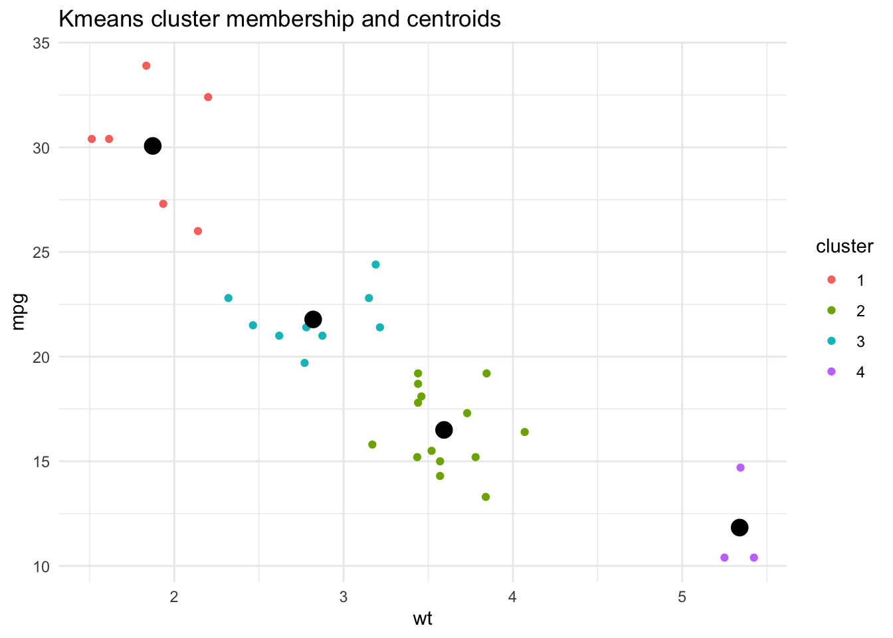
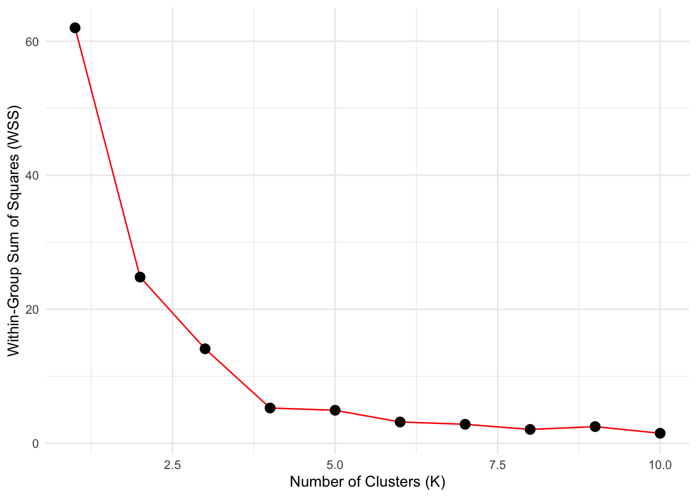

library(tidyverse)
mtcars mpg cyl disp hp drat wt qsec vs am gear carb
Mazda RX4 21.0 6 160.0 110 3.90 2.620 16.46 0 1 4 4
Mazda RX4 Wag 21.0 6 160.0 110 3.90 2.875 17.02 0 1 4 4
Datsun 710 22.8 4 108.0 93 3.85 2.320 18.61 1 1 4 1
Hornet 4 Drive 21.4 6 258.0 110 3.08 3.215 19.44 1 0 3 1
Hornet Sportabout 18.7 8 360.0 175 3.15 3.440 17.02 0 0 3 2
Valiant 18.1 6 225.0 105 2.76 3.460 20.22 1 0 3 1
Duster 360 14.3 8 360.0 245 3.21 3.570 15.84 0 0 3 4
Merc 240D 24.4 4 146.7 62 3.69 3.190 20.00 1 0 4 2
Merc 230 22.8 4 140.8 95 3.92 3.150 22.90 1 0 4 2
Merc 280 19.2 6 167.6 123 3.92 3.440 18.30 1 0 4 4
Merc 280C 17.8 6 167.6 123 3.92 3.440 18.90 1 0 4 4
Merc 450SE 16.4 8 275.8 180 3.07 4.070 17.40 0 0 3 3
Merc 450SL 17.3 8 275.8 180 3.07 3.730 17.60 0 0 3 3
Merc 450SLC 15.2 8 275.8 180 3.07 3.780 18.00 0 0 3 3
Cadillac Fleetwood 10.4 8 472.0 205 2.93 5.250 17.98 0 0 3 4
Lincoln Continental 10.4 8 460.0 215 3.00 5.424 17.82 0 0 3 4
Chrysler Imperial 14.7 8 440.0 230 3.23 5.345 17.42 0 0 3 4
Fiat 128 32.4 4 78.7 66 4.08 2.200 19.47 1 1 4 1
Honda Civic 30.4 4 75.7 52 4.93 1.615 18.52 1 1 4 2
Toyota Corolla 33.9 4 71.1 65 4.22 1.835 19.90 1 1 4 1
Toyota Corona 21.5 4 120.1 97 3.70 2.465 20.01 1 0 3 1
Dodge Challenger 15.5 8 318.0 150 2.76 3.520 16.87 0 0 3 2
AMC Javelin 15.2 8 304.0 150 3.15 3.435 17.30 0 0 3 2
Camaro Z28 13.3 8 350.0 245 3.73 3.840 15.41 0 0 3 4
Pontiac Firebird 19.2 8 400.0 175 3.08 3.845 17.05 0 0 3 2
Fiat X1-9 27.3 4 79.0 66 4.08 1.935 18.90 1 1 4 1
Porsche 914-2 26.0 4 120.3 91 4.43 2.140 16.70 0 1 5 2
Lotus Europa 30.4 4 95.1 113 3.77 1.513 16.90 1 1 5 2
Ford Pantera L 15.8 8 351.0 264 4.22 3.170 14.50 0 1 5 4
Ferrari Dino 19.7 6 145.0 175 3.62 2.770 15.50 0 1 5 6
Maserati Bora 15.0 8 301.0 335 3.54 3.570 14.60 0 1 5 8
Volvo 142E 21.4 4 121.0 109 4.11 2.780 18.60 1 1 4 2sub <- mtcars %>% select(wt, mpg)
sub wt mpg
Mazda RX4 2.620 21.0
Mazda RX4 Wag 2.875 21.0
Datsun 710 2.320 22.8
Hornet 4 Drive 3.215 21.4
Hornet Sportabout 3.440 18.7
Valiant 3.460 18.1
Duster 360 3.570 14.3
Merc 240D 3.190 24.4
Merc 230 3.150 22.8
Merc 280 3.440 19.2
Merc 280C 3.440 17.8
Merc 450SE 4.070 16.4
Merc 450SL 3.730 17.3
Merc 450SLC 3.780 15.2
Cadillac Fleetwood 5.250 10.4
Lincoln Continental 5.424 10.4
Chrysler Imperial 5.345 14.7
Fiat 128 2.200 32.4
Honda Civic 1.615 30.4
Toyota Corolla 1.835 33.9
Toyota Corona 2.465 21.5
Dodge Challenger 3.520 15.5
AMC Javelin 3.435 15.2
Camaro Z28 3.840 13.3
Pontiac Firebird 3.845 19.2
Fiat X1-9 1.935 27.3
Porsche 914-2 2.140 26.0
Lotus Europa 1.513 30.4
Ford Pantera L 3.170 15.8
Ferrari Dino 2.770 19.7
Maserati Bora 3.570 15.0
Volvo 142E 2.780 21.4scl <- sub %>% scale() %>% as_tibble()
scl# A tibble: 32 × 2
wt mpg
<dbl> <dbl>
1 -0.610 0.151
2 -0.350 0.151
3 -0.917 0.450
4 -0.00230 0.217
5 0.228 -0.231
6 0.248 -0.330
7 0.361 -0.961
8 -0.0278 0.715
9 -0.0687 0.450
10 0.228 -0.148
# ℹ 22 more rowsscl %>% summarize_all(mean) %>% round(3) # A tibble: 1 × 2
wt mpg
<dbl> <dbl>
1 0 0scl %>% summarize_all(sd) # A tibble: 1 × 2
wt mpg
<dbl> <dbl>
1 1 1#save the output from the kmeans() function into an object named "out"
out <- kmeans(scl, centers=4, nstart=10)
K <- 4
D <- 10
#set seed for random number generator
set.seed(1234)
# "out" is a list. This is common with model-fitting functions in R. To get
# a better sense for what's included in "out", let's run the structure function:
out <- kmeans(scl, centers=K, nstart=D)
str(out)List of 9
$ cluster : int [1:32] 3 3 3 3 2 2 2 3 3 2 ...
$ centers : num [1:4, 1:2] -1.374 0.385 -0.405 2.169 1.655 ...
..- attr(*, "dimnames")=List of 2
.. ..$ : chr [1:4] "1" "2" "3" "4"
.. ..$ : chr [1:2] "wt" "mpg"
$ totss : num 62
$ withinss : num [1:4] 1.623 2.016 1.271 0.355
$ tot.withinss: num 5.27
$ betweenss : num 56.7
$ size : int [1:4] 6 14 9 3
$ iter : int 1
$ ifault : int 0
- attr(*, "class")= chr "kmeans"# 3 ways to extract a list element -- returns the element
str(out$cluster) int [1:32] 3 3 3 3 2 2 2 3 3 2 ...str(out[["cluster"]]) int [1:32] 3 3 3 3 2 2 2 3 3 2 ...str(out[[1]]) int [1:32] 3 3 3 3 2 2 2 3 3 2 ...# 2 related ways to subset a list into a one-element list (usually not what you want)
str(out["cluster"])List of 1
$ cluster: int [1:32] 3 3 3 3 2 2 2 3 3 2 ...str(out[1])List of 1
$ cluster: int [1:32] 3 3 3 3 2 2 2 3 3 2 ...# out$centers is a k-by-J matrix with the coordinates of the
# clusters' centers
str(out$centers) num [1:4, 1:2] -1.374 0.385 -0.405 2.169 1.655 ...
- attr(*, "dimnames")=List of 2
..$ : chr [1:4] "1" "2" "3" "4"
..$ : chr [1:2] "wt" "mpg"out$centers wt mpg
1 -1.3738462 1.6552394
2 0.3846068 -0.5957617
3 -0.4054284 0.2799348
4 2.1691456 -1.3700619#enhancing plot by using the data above
sub <- sub %>% mutate(cluster = factor(out$cluster))
#comparing a count from our data to the kmeans() 'size' output
sub %>% count(cluster) cluster n
1 1 6
2 2 14
3 3 9
4 4 3out$size[1] 6 14 9 3#store the clusters' center locations in their own tibble/dataframe
centers <- as_tibble(out$centers)
centers# A tibble: 4 × 2
wt mpg
<dbl> <dbl>
1 -1.37 1.66
2 0.385 -0.596
3 -0.405 0.280
4 2.17 -1.37 # calculate mean and sd
SD <- sub %>% select(wt, mpg) %>% summarize_all(sd)
MEAN <- sub %>% select(wt, mpg) %>% summarize_all(mean)
SD wt mpg
1 0.9784574 6.026948MEAN wt mpg
1 3.21725 20.09062#repeat/format the values so we can do math with centers
SD <- SD %>% unlist() %>% rep(K) %>% matrix(nrow=K, ncol=2, byrow=T)
MEAN <- MEAN %>% unlist() %>% rep(K) %>% matrix(nrow=K, ncol=2, byrow=T)
SD [,1] [,2]
[1,] 0.9784574 6.026948
[2,] 0.9784574 6.026948
[3,] 0.9784574 6.026948
[4,] 0.9784574 6.026948MEAN [,1] [,2]
[1,] 3.21725 20.09062
[2,] 3.21725 20.09062
[3,] 3.21725 20.09062
[4,] 3.21725 20.09062# unscale the centers (convert back into original units)
centers <- centers*SD + MEAN
round(centers, 1) wt mpg
1 1.9 30.1
2 3.6 16.5
3 2.8 21.8
4 5.3 11.8ggplot() +
geom_point(data=sub, aes(x=wt, y=mpg, color=cluster)) +
geom_point(data=centers, aes(x=wt, y=mpg), size=4) +
ggtitle("Kmeans cluster membership and centroids") +
theme_minimal()
# is k=4 the right number for k?
# let's try k=1, k=2, ..., k=10
res <- vector(length=10)
# we loop over k=1 through k=10
for(i in 1:10) {
# run k means
out <- kmeans(scl, centers=i)
# grab the WSS value, store it in the i'th position of res
res[i] <- out$tot.withinss
}
# let's plot the WSS for each value of k
ggplot(data.frame(x=1:10, y=res), aes(x,y)) +
geom_line(color="red") +
geom_point(size=3) +
xlab("Number of Clusters (K)") +
ylab("Within-Group Sum of Squares (WSS)") +
theme_minimal()